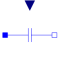
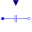

VariableCapacitorIdeal linear electrical capacitor with variable capacitance |

|
Information
This information is part of the Modelica Standard Library maintained by the Modelica Association.
The linear capacitor connects the branch voltage v with the branch current i by
i = dQ/dt with Q = C * v.
The capacitance C is given as input signal.
It is required that C ≥ 0, otherwise an assertion is raised. To avoid a variable index system,
C = Cmin, if 0 ≤ C < Cmin, where Cmin is a parameter with default value Modelica.Constants.eps.
Besides the Cmin parameter the capacitor model has got the two parameters IC and UIC that belong together. With the IC parameter the user can specify an initial value of the voltage over the capacitor, which is defined from positive pin p to negative pin n (v=p.v - n.v).
Hence the capacitor is charged at the beginning of the simulation. The other parameter UIC is of type Boolean. If UIC is true, the simulation tool uses
the IC value at the initial calculation by adding the equation v= IC. If UIC is false, the IC value can be used (but it does not need to!) to calculate the initial values in order to simplify the numerical algorithms of initial calculation.
Parameters (3)
| Cmin |
Value: Modelica.Constants.eps Type: Capacitance (F) Description: Lower bound for variable capacitance |
|---|---|
| IC |
Value: 0 Type: Voltage (V) Description: Initial Value |
| UIC |
Value: false Type: Boolean Description: Decision if initial value IC shall be used |
Connectors (3)
| p |
Type: PositivePin Description: Positive electrical pin |
|
|---|---|---|
| n |
Type: NegativePin Description: Negative electrical pin |
|
| C |
Type: RealInput |
Used in Components (1)
|  |
Modelica.Electrical.Polyphase.Basic Ideal linear electrical capacitors with variable capacitance |